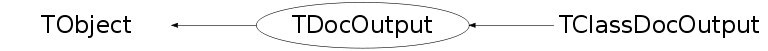

class TDocOutput: public TObject
THtml generated documentation is written to file by TDocOutput. So far only output of HTML is implemented. Customization of the output should be done with THtml's interfaces - TDocOutput should not be used nor re-implemented directly. TDocOutput generates the index tables: * classes (THtml invokes TClassDocOutput for each), * inheritance hierarchy, * types and typedefs, * libraries, * the product index, and * the module index (including the links to per-module documentation). It invokes AT&T's GraphViz tool (dot) if available; charts benefit a lot from it. TDocOutput also writes all pages' header and footer, which can be customized by calling THtml::SetHeader(), THtml::SetFooter().
Function Members (Methods)
public:
| TDocOutput(THtml& html) | |
| TDocOutput(const TDocOutput&) | |
| virtual | ~TDocOutput() |
| void | TObject::AbstractMethod(const char* method) const |
| virtual void | AdjustSourcePath(TString& line, const char* relpath = "../") |
| virtual void | TObject::AppendPad(Option_t* option = "") |
| virtual void | TObject::Browse(TBrowser* b) |
| static TClass* | Class() |
| virtual const char* | TObject::ClassName() const |
| virtual void | TObject::Clear(Option_t* = "") |
| virtual TObject* | TObject::Clone(const char* newname = "") const |
| virtual Int_t | TObject::Compare(const TObject* obj) const |
| void | Convert(istream& in, const char* infilename, const char* outfilename, const char* title, const char* relpath = "../", Int_t includeOutput = 0, const char* context = "", TGClient* gclient = 0) |
| virtual void | TObject::Copy(TObject& object) const |
| Bool_t | CopyHtmlFile(const char* sourceName, const char* destName = "") |
| virtual void | CreateClassIndex() |
| virtual void | CreateClassTypeDefs() |
| virtual void | CreateHierarchy() |
| virtual void | CreateModuleIndex() |
| virtual void | CreateProductIndex() |
| virtual void | CreateTypeIndex() |
| virtual void | DecorateEntityBegin(TString& str, Ssiz_t& pos, TDocParser::EParseContext type) |
| virtual void | DecorateEntityEnd(TString& str, Ssiz_t& pos, TDocParser::EParseContext type) |
| virtual void | TObject::Delete(Option_t* option = "")MENU |
| virtual Int_t | TObject::DistancetoPrimitive(Int_t px, Int_t py) |
| virtual void | TObject::Draw(Option_t* option = "") |
| virtual void | TObject::DrawClass() constMENU |
| virtual TObject* | TObject::DrawClone(Option_t* option = "") constMENU |
| virtual void | TObject::Dump() constMENU |
| virtual void | TObject::Error(const char* method, const char* msgfmt) const |
| virtual void | TObject::Execute(const char* method, const char* params, Int_t* error = 0) |
| virtual void | TObject::Execute(TMethod* method, TObjArray* params, Int_t* error = 0) |
| virtual void | TObject::ExecuteEvent(Int_t event, Int_t px, Int_t py) |
| virtual void | TObject::Fatal(const char* method, const char* msgfmt) const |
| virtual TObject* | TObject::FindObject(const char* name) const |
| virtual TObject* | TObject::FindObject(const TObject* obj) const |
| virtual void | FixupAuthorSourceInfo(TString& authors) |
| virtual Option_t* | TObject::GetDrawOption() const |
| static Long_t | TObject::GetDtorOnly() |
| const char* | GetExtension() const |
| THtml* | GetHtml() |
| virtual const char* | TObject::GetIconName() const |
| virtual const char* | TObject::GetName() const |
| virtual char* | TObject::GetObjectInfo(Int_t px, Int_t py) const |
| static Bool_t | TObject::GetObjectStat() |
| virtual Option_t* | TObject::GetOption() const |
| virtual const char* | TObject::GetTitle() const |
| virtual UInt_t | TObject::GetUniqueID() const |
| virtual Bool_t | TObject::HandleTimer(TTimer* timer) |
| virtual ULong_t | TObject::Hash() const |
| virtual void | TObject::Info(const char* method, const char* msgfmt) const |
| virtual Bool_t | TObject::InheritsFrom(const char* classname) const |
| virtual Bool_t | TObject::InheritsFrom(const TClass* cl) const |
| virtual void | TObject::Inspect() constMENU |
| void | TObject::InvertBit(UInt_t f) |
| virtual TClass* | IsA() const |
| virtual Bool_t | TObject::IsEqual(const TObject* obj) const |
| virtual Bool_t | TObject::IsFolder() const |
| virtual Bool_t | IsModified(TClass* classPtr, TDocOutput::EFileType type) |
| Bool_t | TObject::IsOnHeap() const |
| virtual Bool_t | TObject::IsSortable() const |
| Bool_t | TObject::IsZombie() const |
| virtual void | TObject::ls(Option_t* option = "") const |
| void | TObject::MayNotUse(const char* method) const |
| virtual void | NameSpace2FileName(TString& name) |
| virtual Bool_t | TObject::Notify() |
| void | TObject::Obsolete(const char* method, const char* asOfVers, const char* removedFromVers) const |
| static void | TObject::operator delete(void* ptr) |
| static void | TObject::operator delete(void* ptr, void* vp) |
| static void | TObject::operator delete[](void* ptr) |
| static void | TObject::operator delete[](void* ptr, void* vp) |
| void* | TObject::operator new(size_t sz) |
| void* | TObject::operator new(size_t sz, void* vp) |
| void* | TObject::operator new[](size_t sz) |
| void* | TObject::operator new[](size_t sz, void* vp) |
| TDocOutput& | operator=(const TDocOutput&) |
| virtual void | TObject::Paint(Option_t* option = "") |
| virtual void | TObject::Pop() |
| virtual void | TObject::Print(Option_t* option = "") const |
| virtual Int_t | TObject::Read(const char* name) |
| virtual void | TObject::RecursiveRemove(TObject* obj) |
| virtual void | ReferenceEntity(TSubString& str, TClass* entity, const char* comment = 0) |
| virtual void | ReferenceEntity(TSubString& str, TDataMember* entity, const char* comment = 0) |
| virtual void | ReferenceEntity(TSubString& str, TDataType* entity, const char* comment = 0) |
| virtual void | ReferenceEntity(TSubString& str, TMethod* entity, const char* comment = 0) |
| virtual Bool_t | ReferenceIsRelative(const char* reference) const |
| virtual const char* | ReplaceSpecialChars(char c) |
| void | ReplaceSpecialChars(TString& text) |
| void | ReplaceSpecialChars(ostream& out, const char* string) |
| void | ReplaceSpecialChars(TString& text, Ssiz_t& pos) |
| void | TObject::ResetBit(UInt_t f) |
| virtual void | TObject::SaveAs(const char* filename = "", Option_t* option = "") constMENU |
| virtual void | TObject::SavePrimitive(ostream& out, Option_t* option = "") |
| void | TObject::SetBit(UInt_t f) |
| void | TObject::SetBit(UInt_t f, Bool_t set) |
| virtual void | TObject::SetDrawOption(Option_t* option = "")MENU |
| static void | TObject::SetDtorOnly(void* obj) |
| static void | TObject::SetObjectStat(Bool_t stat) |
| virtual void | TObject::SetUniqueID(UInt_t uid) |
| virtual void | ShowMembers(TMemberInspector& insp) |
| virtual void | Streamer(TBuffer& b) |
| void | StreamerNVirtual(TBuffer& b) |
| virtual void | TObject::SysError(const char* method, const char* msgfmt) const |
| Bool_t | TObject::TestBit(UInt_t f) const |
| Int_t | TObject::TestBits(UInt_t f) const |
| virtual void | TObject::UseCurrentStyle() |
| virtual void | TObject::Warning(const char* method, const char* msgfmt) const |
| virtual Int_t | TObject::Write(const char* name = 0, Int_t option = 0, Int_t bufsize = 0) |
| virtual Int_t | TObject::Write(const char* name = 0, Int_t option = 0, Int_t bufsize = 0) const |
| virtual void | WriteHtmlFooter(ostream& out, const char* dir = "", const char* lastUpdate = "", const char* author = "", const char* copyright = "") |
| virtual void | WriteHtmlHeader(ostream& out, const char* title, const char* dir = "", TClass* cls = 0) |
| void | WriteLineNumbers(ostream& out, Long_t nLines, const TString& infileBase) const |
protected:
| void | AddLink(TSubString& str, TString& link, const char* comment) |
| int | CaseInsensitiveSort(const void* name1, const void* name2) |
| virtual void | TObject::DoError(int level, const char* location, const char* fmt, va_list va) const |
| void | TObject::MakeZombie() |
| void | ProcessDocInDir(ostream& out, const char* indir, const char* outdir, const char* linkdir) |
| Bool_t | RunDot(const char* filename, ostream* outMap = 0, TDocOutput::EGraphvizTool gvwhat = kDot) |
| void | WriteHtmlFooter(ostream& out, const char* dir, const char* lastUpdate, const char* author, const char* copyright, const char* footer) |
| void | WriteHtmlHeader(ostream& out, const char* titleNoSpecial, const char* dir, TClass* cls, const char* header) |
| void | WriteLocation(ostream& out, TModuleDocInfo* module, const char* classname = 0) |
| void | WriteModuleLinks(ostream& out) |
| void | WriteModuleLinks(ostream& out, TModuleDocInfo* super) |
| virtual void | WriteSearch(ostream& out) |
| void | WriteTopLinks(ostream& out, TModuleDocInfo* module, const char* classname = 0, Bool_t withLocation = kTRUE) |
Data Members
public:
| enum EGraphvizTool { | kDot | |
| kNeato | ||
| kFdp | ||
| kCirco | ||
| }; | ||
| enum EFileType { | kSource | |
| kInclude | ||
| kTree | ||
| kDoc | ||
| }; | ||
| enum TObject::EStatusBits { | kCanDelete | |
| kMustCleanup | ||
| kObjInCanvas | ||
| kIsReferenced | ||
| kHasUUID | ||
| kCannotPick | ||
| kNoContextMenu | ||
| kInvalidObject | ||
| }; | ||
| enum TObject::[unnamed] { | kIsOnHeap | |
| kNotDeleted | ||
| kZombie | ||
| kBitMask | ||
| kSingleKey | ||
| kOverwrite | ||
| kWriteDelete | ||
| }; |
protected:
| THtml* | fHtml | THtml object we belong to |
Class Charts
{kind=link}
{kind=link}
{kind=link}
{kind=link}

Function documentation
void AddLink(TSubString& str, TString& link, const char* comment)
Add a link around str, with title comment. Update str so it surrounds the link.
void AdjustSourcePath(TString& line, const char* relpath = "../")
adjust the path of links for source files, which are in src/, but need to point to relpath (usually "../"). Simply replaces "=\"./" by "=\"../"
void Convert(istream& in, const char* infilename, const char* outfilename, const char* title, const char* relpath = "../", Int_t includeOutput = 0, const char* context = "", TGClient* gclient = 0)
Bool_t CopyHtmlFile(const char* sourceName, const char* destName = "")
Copy file to HTML directory Input: sourceName - source file name (fully qualified i.e. file system path) destName - optional destination name, if not specified it would be the same as the source file name Output: TRUE if file is successfully copied, or FALSE if it's not NOTE: The destination directory is always fHtml->GetOutputDir()
void CreateHierarchy()
Create a hierarchical class list The algorithm descends from the base classes and branches into all derived classes. Mixing classes are displayed several times.
void CreateModuleIndex()
Create the class index for each module, picking up documentation from the module's TModuleDocInfo::GetInputPath() plus the (possibly relative) THtml::GetModuleDocPath(). Also creates the library dependency plot if dot exists, see THtml::HaveDot().
void CreateProductIndex()
Fetch documentation from THtml::GetProductDocDir() and put it into the product index page.
void DecorateEntityBegin(TString& str, Ssiz_t& pos, TDocParser::EParseContext type)
Add some colors etc to a source entity, contained in str. The type of what's contained in str is given by type. It's called e.g. by TDocParser::BeautifyLine(). This function should assume that only str.Begin() is valid. When inserting into str.String(), str.Begin() must be updated.
void DecorateEntityEnd(TString& str, Ssiz_t& pos, TDocParser::EParseContext type)
Add some colors etc to a source entity, contained in str. The type of what's contained in str is given by type. It's called e.g. by TDocParser::BeautifyLine(). This function should assume that only str."End()" (i.e. str.Begin()+str.Length()) is valid. When inserting into str.String(), str.Length() must be updated.
void FixupAuthorSourceInfo(TString& authors)
Special author treatment; called when TDocParser::fSourceInfo[kInfoAuthor] is set. Modifies the author(s) description, which is a comma separated list of tokens either in the format (i) "FirstName LastName " or (ii) "FirstName LastName <link> more stuff" The first one generates an XWho link (CERN compatible), the second a http link (WORLD compatible), <link> being e.g. <mailto:user@host.bla> or <http://www.host.bla/page>.
Bool_t IsModified(TClass* classPtr, TDocOutput::EFileType type)
void NameSpace2FileName(TString& name)
Replace "::" in name by "__" Replace "<", ">", " ", ",", "~", "=" in name by "_" Replace "A::X<A::Y>" by "A::X<-p0Y>", "A::B::X<A::B::Y>" by "A::B::X<-p1Y>", etc
void ProcessDocInDir(ostream& out, const char* indir, const char* outdir, const char* linkdir)
void ReferenceEntity(TSubString& str, TClass* entity, const char* comment = 0)
Create a reference to a class documentation page. str encloses the text to create the reference for (e.g. name of instance). comment will be added e.g. as tooltip text. After the reference is put into str.String(), str will enclose the reference and the original text. Example: Input: str.String(): "a gHtml test" str.Begin(): 2 str.Length(): 5 Output: str.String(): "a <a href="THtml.html">gHtml</a> test" str.Begin(): 2 str.Length(): 30
void ReferenceEntity(TSubString& str, TDataMember* entity, const char* comment = 0)
Create a reference to a data member documentation page. str encloses the text to create the reference for (e.g. name of instance). comment will be added e.g. as tooltip text. After the reference is put into str.String(), str will enclose the reference and the original text. Example: Input: str.String(): "a gHtml test" str.Begin(): 2 str.Length(): 5 Output: str.String(): "a <a href="THtml.html">gHtml</a> test" str.Begin(): 2 str.Length(): 30
void ReferenceEntity(TSubString& str, TDataType* entity, const char* comment = 0)
Create a reference to a type documentation page. str encloses the text to create the reference for (e.g. name of instance). comment will be added e.g. as tooltip text. After the reference is put into str.String(), str will enclose the reference and the original text. Example: Input: str.String(): "a gHtml test" str.Begin(): 2 str.Length(): 5 Output: str.String(): "a <a href="THtml.html">gHtml</a> test" str.Begin(): 2 str.Length(): 30
void ReferenceEntity(TSubString& str, TMethod* entity, const char* comment = 0)
Create a reference to a method documentation page. str encloses the text to create the reference for (e.g. name of instance). comment will be added e.g. as tooltip text. After the reference is put into str.String(), str will enclose the reference and the original text. Example: Input: str.String(): "a gHtml test" str.Begin(): 2 str.Length(): 5 Output: str.String(): "a <a href="THtml.html">gHtml</a> test" str.Begin(): 2 str.Length(): 30
Bool_t ReferenceIsRelative(const char* reference) const
Check whether reference is a relative reference, and can (or should) be prependen by relative paths. For HTML, check that it doesn't start with "http://" or "https://"
const char* ReplaceSpecialChars(char c)
Replace ampersand, less-than and greater-than character, writing to out. If 0 is returned, no replacement needs to be done.
void ReplaceSpecialChars(TString& text, Ssiz_t& pos)
void ReplaceSpecialChars(TString& text)
Replace ampersand, less-than and greater-than character Input: text - text where replacement will happen,
void ReplaceSpecialChars(ostream& out, const char* string)
Replace ampersand, less-than and greater-than characters, writing to out
Input: out - output file stream
string - pointer to an array of characters
Bool_t RunDot(const char* filename, ostream* outMap = 0, TDocOutput::EGraphvizTool gvwhat = kDot)
Run filename".dot", creating filename".png", and - if outMap is !=0, filename".map", which gets then included literally into outMap.
void WriteHtmlHeader(ostream& out, const char* titleNoSpecial, const char* dir, TClass* cls, const char* header)
Write HTML header Internal method invoked by the overload
void WriteHtmlHeader(ostream& out, const char* title, const char* dir = "", TClass* cls = 0)
Write HTML header Input: out - output file stream title - title for the HTML page cls - current class dir - relative directory to reach the top ("" for html doc, "../" for src/*cxx.html etc) evaluates the Root.Html.Header setting: * if not set, the standard header is written. (ROOT) * if set, and ends with a "+", the standard header is written and this file included afterwards. (ROOT, USER) * if set but doesn't end on "+" the file specified will be written instead of the standard header (USER) Any occurrence of "%TITLE%" (without the quotation marks) in the user provided header file will be replaced by the value of this method's parameter "title" before written to the output file. %CLASS% is replaced by the class name, %INCFILE% by the header file name as given by TClass::GetDeclFileName() and %SRCFILE% by the source file name as given by TClass::GetImplFileName(). If the header is written for a non-class page, i.e. cls==0, lines containing %CLASS%, %INCFILE%, or %SRCFILE% will be skipped.
void WriteHtmlFooter(ostream& out, const char* dir, const char* lastUpdate, const char* author, const char* copyright, const char* footer)
Write HTML footer Internal method invoked by the overload
void WriteHtmlFooter(ostream& out, const char* dir = "", const char* lastUpdate = "", const char* author = "", const char* copyright = "")
Write HTML footer Input: out - output file stream dir - usually equal to "" or "../", depends of current file directory position, i.e. if file is in the fHtml->GetOutputDir(), then dir will be "" lastUpdate - last update string author - author's name copyright - copyright note Allows optional user provided footer to be written. Root.Html.Footer holds the file name for this footer. For details see THtml::WriteHtmlHeader (here, the "+" means the user's footer is written in front of Root's!) Occurences of %AUTHOR%, %CHANGED%, %GENERATED%, and %COPYRIGHT% in the user's file are replaced by their corresponding values (author, lastUpdate, today, and copyright) before written to out. If no author is set (author == "", e.g. for ClassIndex.html") skip the whole line of the footer template containing %AUTHOR%. Accordingly for %COPYRIGHT%.
void WriteLineNumbers(ostream& out, Long_t nLines, const TString& infileBase) const
Create a div containing the line numbers (for a source listing) 1 to nLines.
Create links to the source file's line number and anchors, such that one can
jump to SourceFile.cxx.html#27 (using the anchor), and one can copy and paste
the link into e.g. gdb to get the text "SourceFile.cxx:27".
void WriteModuleLinks(ostream& out, TModuleDocInfo* super)
Create a div containing links to all modules
void WriteSearch(ostream& out)
Write a search link or a search box, based on THtml::GetSearchStemURL() and THtml::GetSearchEngine(). The first one is preferred.
void WriteLocation(ostream& out, TModuleDocInfo* module, const char* classname = 0)
make a link to the description
void WriteTopLinks(ostream& out, TModuleDocInfo* module, const char* classname = 0, Bool_t withLocation = kTRUE)
Write the first part of the links shown ontop of each doc page; one <div> has to be closed by caller so additional items can still be added.
int CaseInsensitiveSort(const void* name1, const void* name2)
TDocOutput(THtml& html)